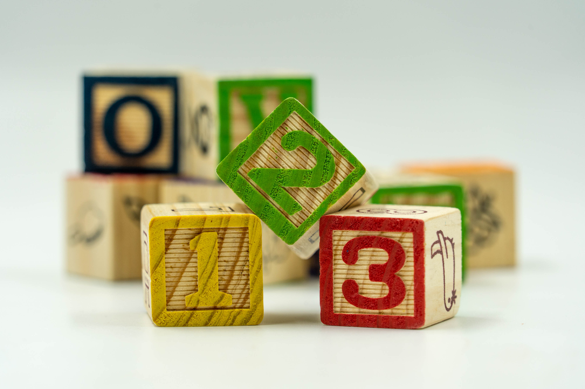

Activities for Consistent Counters
There are many different ways to incorporate mathematics into everyday activities!
Gardening
Materials needed:Seeds, pot or clear plastic cup filled with soil, a small shovel or spoon, small sticks or popsicle sticks, a marker.
Steps:
- Count the Seeds: Have your child count out the seeds, encouraging them to count out loud as they pick up each seed. It can be
particularly helpful to pick a number beyond twelve to help your child practice counting into the teens.
- Prepare the Labels: This is where we'll introduce numerals.
For each seed, your child will make a label with a number on it.
Give them a stick and a marker and ask them to help you write the numbers 1 through the total number of seeds on them.
This gives them practice recognizing and writing numerals.
- Dig the Holes: Have your child make small holes in the soil for the seeds. Encourage them to count aloud each hole as they dig it.
- Plant the Seeds and Match the Labels: Now, as your child plants each seed, have them match the label with the same number to the seed. For example, the first seed they plant gets the label "1", the second seed gets the label "2", and so on.
This helps reinforce the link between the numeral, the spoken number, and the quantity.
- Cover and Water: Your child can now cover the seeds with soil and water them. Encourage them to count as before and keep track of how many they've watered.
- Monitor Growth: As the seeds sprout and grow, continue to refer to the plants by their numeral. This keeps reinforcing the numerals over time. You can ask questions like, "How is plant number 15 doing today?" or "Can you water plants 10 to 20?"
Baking and Cooking
Baking and cooking can provide a fun and delicious way to learn math! Here is one example of how to incorporate math into baking cookies.
Materials Needed:Your favorite cookie dough recipe ingredients, cookie cutters, baking sheets, and a marker and paper for labeling.
Steps:
- Count the Ingredients: As you gather your ingredients, have your child help count each item.
For example, "We need 2 eggs" or "We need 3 cups of flour."
This helps your child practice counting and associating numbers with quantities. Be sure to both count and then identify how many items there are in all.
- Measure and Mix: Involve your child in the measuring and mixing process.
For instance, they can help measure the flour, count the number of spoonfuls of sugar, or the number of times they stir the batter.
Reinforce the quantity of each ingredient and the steps in the process by counting aloud together.
- Shape the Cookies: Roll out the dough and let your child cut out shapes using cookie cutters. Have them count each cookie they cut out, and challenge them to cut out a specific number of cookies, such as "Can you cut out 15 cookies?"
- Label the Cookies: Prepare small paper labels for each cookie with numbers 1 to 20 written on them (or however many cookies you're making). Place or tape these labels next to each cookie on the baking sheet. This helps reinforce number recognition.
- Bake and Enjoy: Once the cookies are ready and have cooled down, ask your child to serve a specific number of cookies based on the labels. For example, "Can you please give me cookie number 6 and cookie number 18?"
Choosing a Storybook
What to look for: Although there are many counting books available,
almost any picture book can become a great resource for early math learning!
The best books are books that you and your child enjoy reading together.
What to avoid:What to avoid: Lift-the-flap books can provide interactivity and surprises for book reading,
but when learning to count, these books can be distracting and make it harder for children to learn.
Similarly, avoid books that draw attention away from counting or towards non-numerical features.
What to do on each page: After reading each page count the items on the page
(or ask your child to do so) and then ask how many there were.
Storybook Reading
Adding your own questions during storybook reading can be a great way to incorporate mathematics into book time! The most important thing to keep in mind
is to think of questions your child find intersting and enganging. Research has shown that the questions parents ask during book reading are a powerful source
for promoting children's early math skills.